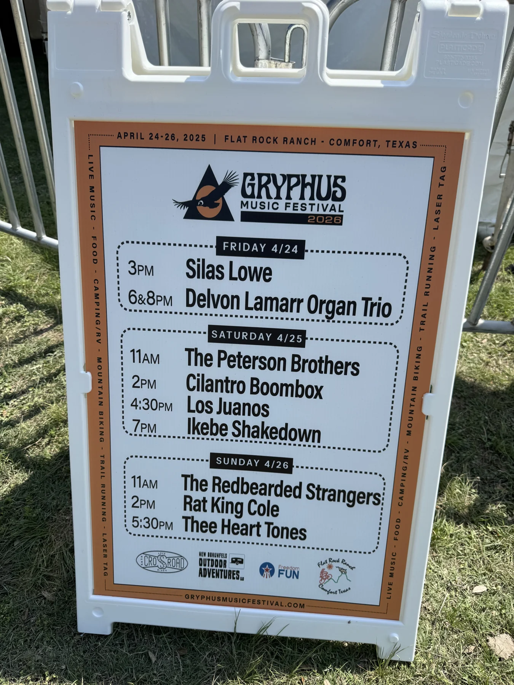

W
YOUR NEXT NIGHT WITH GORDONGRYPHUSApr 30 to May 2, 2027 · Texas Hill Country219 days
SINCE THE RIDE FROM LOGAN · 1986
To Walt
Still on the same ride.
Walt, we sat together on the ride from Logan Airport to St. Paul’s in 1986. Forty years of making each other laugh, telling each other the truth, and making time for one more conversation. The ranch, the music, Gryphus: another way to keep coming back to each other.
From school friends to Karst Hill and Gryphus. Still debating my basketball potential.
With love, Gordon